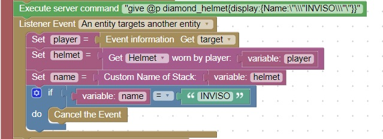
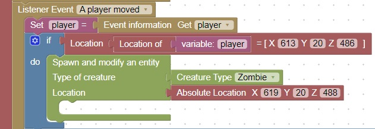

Maze Enhancement, Mob Protection
Note: Perform an update as described here before attempting this homework (thanks).
Let's say that you have a bunch of creatures in a room, so many that they cannot be defeated
The only way through this obstacle is to become "invisible" to them.
The problem with the invisibility potion effect is that you can still be detected by mobs, just at a lower rate
What we really need is make it so that we cannot be targeted by a mob. We need to cancel the target entity event
This code will do that when the player is wearing a helmet named "INVISO". This is a very over-powered effect so the helmet should probably be removed when the player leaves the room

You will also need to create mobs when you enter the room. This is done by code placed in the playerMove event:
The first location is the doorway entrance
The second location is the place in the room where zombies will spawn

Create a room where zombies will spawn. You might make this room with no ceiling, that way the zombies will eventually die from the sunlight
When you are wearing the inviso helmet, the mob should look at you but not attack. If that happens the test of the code is successful.